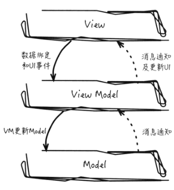
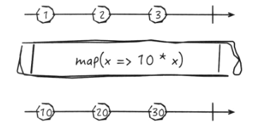

Angular2入门-RxJs
响应式编程
响应式编程（Reactive Programming）是一种面向数据流（Data Flows）和变化传播（the Propogation of Change）的编程范式。
所谓的面向变化传播就是看最初的数据是否会随着后续对应变量的变化而变化，比如3个变量的表达式C = A + B，A和B有初始值，这行语句第一次执行后，C的值会被计算出来。
在命令式编程（Imperative Programming）中，当B的数值改变后，C的数值并没有随着B的数值改变而改变，除非再次执行这行语句。
而在响应式编程中，不用再次执行，随着B的改变，C的值也会改变。
在MVVM模型中，M（Model）到V（View）的绑定关系如下图，当model由model1变为model2时，view也随之变化，由view1变为view2，也体现了响应式编程中面向变化传播的思想:

面向数据流
当监听一系列事件流并对这一系列事件流进行映射、过滤和合并等处理后，再响应整个事件流的回调，这个过程便属于面向数据流的编程。例如ReactiveX的编程范式中，数据流被封装在一个叫做Observable的对象实例中，通过观察者模式，对数据流进行统一的订阅（Subscribe），并在中间插入像filter()这样的操作函数，从而对Observable所封装的数据流进行过滤处理：1
myObservable.filter(fn).subscribe(callback);
响应式编程清晰地表达了动态的异步数据流，而相关的计算模型也自动地将变化的值通过数据流的方式进行了传播。
ReactiveX
ReactiveX（Reactive Extensions）简写为Rx，最初是微软开发并维护的基于Reactive Programming范式实现的一套工具库集合，后来开源，提供一系列接口规范来帮助开发者更方便地处理异步数据流。Rx系列结合了观察者模式、迭代器模式和函数式编程。
Observable介绍
在Rx中，最核心的概念就是Obserable，应用中产生的异步数据都需要先包装成Observable对象，Observable对象的作业是把这些异步的数据变换为数据流形式，所以生成的这些Observable对象相当于数据流的源头，后续的操作都是围绕着这些被转换的流动数据展开。

上图中，最上面的时间线代表了最初的Observable对象，这个Observable数据流对外发出了3个数据，这3个数据可能是3次点击事件所携带的数据，也可能是3次网络请求返回的数据，经过map操作的时候，原来的Observable对象会变成一个新的Observable对象，并且原来的3个数据会转换成新的数据在新的Observable对象数据流里流动。
这样的操作实际上与车间生产流水线非常相似，Observable对象相当于半成品输入，而上述的map操作相当于流水线的工人，加工后最终输出成品，而这个map操作在Rx中称为Operator，这样的操作更新是对一个事件集合做过滤处理，生成一个新的事件集。Rx借鉴了集合的操作思想，把复杂的异步数据流的处理问题，简化成了同步的集合处理问题。
简而言之，Rx中，通过Observable对象，可以像操作集合一样操作复杂的异步数据流。
Operator介绍
Rx在结合了观察者模式的同时，还结合了函数式编程和迭代器模式的思想，其中、Rx的Operator便是对这两种编程模式的具体体现。
Operator，即Rx中Observable对象的操作符，在Rx中，每一个Observable对象，或者说数据流，都可以通过某个Operator对该Observable对象进行变换、过滤、合并和监听等操作。同时、大多数的Operator在对Observable对象处理后都会返回一个新的Observable对象供下一个Operator进行处理，这样方便在各个Operator之间通过链式调用的方式编写代码。1
let newObservable = observable.debounceTime(500).take(2); // 生成新的Observable对象
上述代码中debounceTime()以及take()都是Operator。
在Rx中，Observable作为观察者模式中的被观察者，需要一个方法来订阅它，而subscribe()便是这个方法，订阅Observable对象发出的所有事件：1
observable.subscribe(observer);
subscribe()方法接收一个observer作为参数，来对Observable发出的事件进行订阅，每当Observable对象完成并发送（Emit）一个事件时，该事件就会被observer所捕获，进入到observer对应的回调函数中。被subscribe()订阅过的Observable对象并不会返回一个新的Observable对象，因为subscribe()不是一个可以改变原始数据流的函数。相反，subscribe()会返回一个Subscription实例，这个Subscription实例提供了很多操作API，如取消订阅事件的unsubscribe()方法等。
其他核心概念
除了Observable对象和Operator，Rx还有其他核心概念：
- Observer：对Observable对象发出的每个事件进行响应
- Subscription：Observable对象被订阅后返回的Subscription实例
- Subject：EventEmitter的等价数据结构，可以当做Observable被监听，也可以作为Observer发送新的事件
RxJS
Rx继承自响应式编程范式，已经在多种语言中实现，除了在JS层面上的实现RxJS外，还有RxJava、Rx.Net、RxSwift等。
创建Observable对象
以一个简单示例开始，首先把数据流封装为统一的Observable对象，并对其进行处理：1
2
3let button = document.querySelector('button');
Rx.Observable.fromEvent(button, 'click') // 返回一个Observable对象
.subscribe(() => console.log('Clicked'));
通过Observable中的fromEvent静态方法（Static Method），把button标签的所有点击事件封装到一个Observable对象中，并转化为数据流的形式，最后通过subscribe()方法对整个点击事件流进行监听，即，当按钮被点击是，对应的Observable对象变发出一个相应的信息，这条信息被会subscribe()中的observer回调函数所捕获，从而执行console.log()语句，这样便实现了一个最简单的数据流监听。
使用RxJS处理复杂场景
用JS原生的事件监听也可以完成上述例子，那么为什么还需要Observable、Operator等复杂的概念呢？
以复杂例子说明，在实际开发中，经常有一个场景：当用户在一个文本输入框进行输入时，需要对用户的输入进行实时的监听，每当用户输入一些新字符时，便会发一个请求到服务器端，来获取一些推荐信息展示给用户，但实现这个功能的时候，可能还会有一些限制：
- 不必在每次用户输入的时候都发起请求，用户在文本框输入文字时，可能会输入的很快，这时是不需要给用户推荐任何信息的，不然频繁发生网络请求可能会带来性能问题，因此需要优化，每当用户输入停顿500ms且没有在输入时才返回推荐信息给用户。
- 要保证请求返回的顺序，在异步请求的情况下，由于服务器返回推荐数据的响应事件受各种因数影响，有时前端拿到的推荐数据不是最后依次请求，所以需要保证这些推荐信息的渲染顺序要与请求顺序一致。
以上需求其实不难实现，通过原生JS监听和回调函数可以解决，但会有点复杂，在代码上需要新增各种各样的状态量，使得原本的逻辑变得冗余难读，同时这些状态量往往难以维护，久而久之就成了一些bug的源头。
在RxJS中，这样的数据流操作却可以非常优雅的实现：1
2
3
4
5let inputSelector = document.querySelector('input');
Rx.Observable.fromEvent(inputSelector, 'keyup')
.decounceTime(500)
.switchMap(event => getRecommend(event.target.value))
.subscribe(callback);
不用详细解释，仅仅看流程就知道，RxJS借鉴函数式编程的理念，把所有状态量的操作都封装在一个个Operator函数中，并且通过链式调用的方法对原始数据流进行了过滤等操作，使得代码变得容易阅读且方便维护。
RxJS和Promise对比
RxJS的Observable可以通过toPromise()方法把原有的Observable对象转为Promise对象，那么RxJS和Promise究竟那个更好？其实，从上面的转换可以看出，Promise能用的场景RxJS都能用，RxJS是作为Promise的超集存在的。
先看看两种方式实例创建的简单代码：1
2
3
4
5
6
7
8
9
10
11
12
13
14
15
16
17// Promise实例的创建
let promise = new Promise( (resolve, reject) => {
// ...
if( /* 成功 */ ){
resolve(value);
}else{
reject(error);
}
} );
// Observable实例的创建：
let Observable = new Observable( observer => {
observer.next(value1);
observer.next(value2);
observer.error(err);
} );
对比上面的代码可以发现，Promise只能针对单一的异步事件进行resolve()操作，而在Observable中，不仅能处理一个单一的异步事件（即调用observer的next()方法），而且能以流的形式响应多个异步事件。
同时，Promise使用场景最多的all()、race()等方法，RxJS同样有对应的解决方案，对all()，RxJS通过forkJoin()方法实现，对于race()，RxJS通过merge()和take()来实现。1
2
3
4
5// Promise中，all()方法用来合并请求，
let newPromise = Promise.all(promiseReq1, promiseReq2);
// Observable中，对应的forkJoin()方法合并请求
let newObservable = Rx.Observable.forkJoin(obsReq1, obsReq2);
“冷”模式下的Observable
在Rx的理念中，Observable通常可以分成“热”（HOT）模式和“冷”（Cold）模式，在热模式下，Observable对象一旦创建，便会开始发送数据，而在冷模式下，Observable对象会一致等到自己被订阅才会开始数据流的发送。
在RxJS中，Observable实现的是冷模式:1
2
3
4
5
6
7
8
9console.log('Observable的数据发送顺序为：');
let obs = new Observable(observer => {
console.log('Observable start');
observer.next();
})
console.log('start');
obs.subscribe();
在RxJS中，observer.next();在Observable对象被订阅后才执行。
除了冷和热两种模式外，RxJS还存在另外一种被称为Connectable的模式，这种模式下的Observable对象不管有没有被订阅、都不会发送数据，除非ConnectableObservable实例的connect()方法被调用：1
2
3
4
5
6
7
8
9
10
11
12
13console.log('ConnectableObservable的数据发送顺序为：');
let obs = new Observable(observer => {
console.log('Observable start');
observer.complete();
}).publish(); // Observable对象被publish()方法转为Connectable模式
console.log('start');
obs.subscribe();
console.log('after Observable has been subscribed');
obs.connect();
RxJS中的Operator
RxJS中，Operator操作符分为几类：
- 创建操作符（Creation Operators）
- 变换操作符（Transformation Operators）
- 过滤操作符（Filtering Operators）
- 组合操作符（Combination Operators）
- 工具操作符（Utility Operators）
创建操作符
RxJS中的创建操作符，例如Observable.formEvent()和new Observable()，Observable.create()接受一个工厂函数（该函数以observer作为参数传入）并返回一个新的Observable对象，这个对象最终被subscribe()方法所监听，每当observer的next()方法被调用时，subscribe()中的callback函数便能捕获到observer传来的数据并进行相应的处理，这样便实现了对数据流的订阅和监听功能。1
2
3
4
5
6
7
8
9
10let observable = Rx.Observable.create(observer => {
getData(data => {
observer.next(data);
observer.complete();
})
});
observable.subscribe(data => {
// doSomething(data);
});
变换操作符
有时，通过Observable对象获取到的数据需要做一些批量的小调整，比如数据接口经常会有自己的一套规范包裹数据：1
2
3
4{
"err_code": 0,
"data":{"name": "Operators"}
}
只有数据中的data字段是实际想要处理的，所以需要对每一个请求做依次变换操作，把原本的数据流变换成需要的数据流，这就需要用到RxJS的变换操作符。RxJS最常用的变换操作是Observable.prototype.map()：1
2
3
4
5observable.map(response => {
return response.data;
}).subscribe(data => {
// ...
})
当observable拿到响应数据response并传递给observer之前，可以通过map操作预先对response进行处理。
过滤操作符
过滤操作符可以用来过滤掉数据流中一些不需要处理的数据，例如，前端获取数据时，接口会因为各种原因无法返回最终需要的数据，可能是异常导致数据为空，或只返回一个错误代码以及错误描述，但是并不需要处理这些错误信息，所以就需要过滤掉这些数据（实际情况也有可能需要对错误进行提示等），这时，就可以用Observable.prototype.filter()来对数据流进行过滤。1
2
3
4
5
6
7
8observable.filter(response => {
return !!response.data && response.status === 200; // 结果为false的数据不会再流向下一个operator，即下面的map
}).map(response => {
return response.data;
})
.subscribe(data => {
// ...
})
组合操作符
每个接口都可以转换为相应的数据流，很多业务场景需要依赖两个甚至更多的接口数据，并且需要在这些接口数据都成功获取后，再进行关联合并。
要满足这样的场景，就需要各个数据流汇合组成新的数据流，这时候就需要用到组合操作符，常用的是Observable.forkJoin()方法。1
2
3
4
5
6
7
8
9
10
11
12
13
14
15
16
17let getFirstDatObs = Rx.Observable.create(observer => {
observer.next(getFirstData());
observer.complet();
});
let getSecondDatObs = Rx.Observable.create(observer => {
observer.next(getSecondData());
observer.complet();
});
let observable = Rx.Observable.forkJoin(getFirstDataObs, getSecondDataObs);
observable.subscribe(datas => {
// datas[0] 是getFirstDatObs的数据
// datas[1] 是getSecondDatObs的数据
// doSomething(datas)....
})
Observable.forkJoin()方法把原本两个相互独立的Observable对象合并成一个新的Observable对象，它会在两个Observable对象的数据都抵达后才开始合并处理，且doSomething(datas)只会执行一次。datas数组包含两个数据流。
注意：Observable.forkJoin()是静态函数，不是实例函数（Observable.prototype.forkJoin()）。部分操作符只有实例函数版本而没有静态函数版本，而有一些同时存在两个版本的操作符方法的效果一般是一样的。
若某次数据请求需要依赖前一次请求的结果，也就是说两次请求必须有先后顺序的，这时可以使用Observable.prototype.concatMap()。1
2
3
4
5
6
7
8
9
10
11
12
13
14
15
16
17
18
19let getFirstDatObs = Rx.Observable.create(observer => {
observer.next(getFirstData());
observer.complet();
});
let createSecondDataObs = function(firstData){
return Rx.Observable.create(observer => {
getSecondData(firstData, secondData => {
observer.next(secondData);
observer.complet();
});
});
}
let observable = getFirstDataObs.concatMap(firstData => {
return createSecondDataObs(firstData);
}).subscribe(secondData => {
// ...
});
通过Observable.prototype.concatMap()方法，getSecondData()的数据流会紧接在getFirstDatObs()的数据流后，并最终被subscribe()所捕获。
工具操作符
Observable.prototype中还有很多有用的方法，统称为工具操作符，比如Observable.prototype.delay()或Observable.prototype.timeout()等。
当需要给某个请求设置timeout时，就会用到这些timeout方法：1
2
3
4
5prevObservable.timeout(5000).subscribe(data => {
// ...
}, err => { // 超时抛出错误
handleErr(err);
});
Angular中的RxJS
在Angular中，RxJS的使用非常频繁，例如：HTTP服务中的get/post/request等方法就返回Observable对象，以及路由中events，params等也都是Observable对象。
以如下两个场景为例，学习如何在Angular中使用RxJS。
改造HTTP服务
在开发复杂项目时，有时会觉得原来的HTTP服务不够强大，比如没有统一错误处理、没有统一回调捕获（Callback Capture），为了实现这点，需要对现有的HTTP服务进行该着，把一些统一的全局处理封装在自己实现的HTTP服务器里面，改造封装后的HTTP服务需要实现如下功能：
- 对请求结果进行统一的预处理
- 对捕获到的错误统一报错
- 在HTTP请求发起时，开启加载动画
- 在HTTP请求发起时，关闭加载动画
对现有HTTP服务的在封装重写不应该修改原有的HTTP服务的方法，包括函数签名和返回的数据类型，所以不论是get、post、update还是delete方法都需要返回一个可以被订阅的Observable对象：1
2
3
4
5
6
7
8
9
10
11
12
13
14
15
16
17
18
19
20
21
22
23
24
25
26
27
28
29
30
31
32
33
34
35import { Injectable } from '@angular/core';
import { Http, RequestOptions, Headers } from '@angular/http';
import { Observable } from 'rxjs/Rx';
// ...
()
export class MyHttpService{
constructor(private http: Http){}
// 对于get()方法，统一调用request()方法发送请求
get(url: string, reqOpts?: RequestOptions){
return this.request(url, Object.assign({
method: 'get'
}, reqOpts));
}
// post、delete、update等方法的实现与get()方法类似
// ...
// get、post、update、delete方法的统一封装
request(url: string, reqOpts: RequestOptions){
// ...
this.showLoading(); // 开启加载动画
return this.http.request(url, new RequestOptions(reqOpts))
.map(res => res.join())
.do(this.hideLoading().bind(this)) // 关闭加载动画
.map(this.preprocessRes.bind(this)) // 对返回数据统一预处理
.catch(this.handleErr.bind(this)); // 对请求错误统一处理
}
private preprocessRes(res){
// ...
return res.data;
}
}
get、post、update、delete方法统一对request()方法进行调用，并且会通过request方法返回统一的Observable对象，这样，业务需求以及核心代码便被封装在request方法中。
输入提示功能
实现一个较为完善的输入提示功能，需要完成如下需求：
- 不必在每次用户输入的时候都发起请求
- 发请求前检查内容，若输入内容相同，不发送请求
- 要保证请求返回的顺序
伪代码如下：1
2
3
4
5
6
7
8
9
10
11
12
13
14
15
16
17
18
19
20
21
22
23
24
25// ...
({
selector: 'demo-input',
tempalte: `
<input type="text" [ngFormControl]="term" />
<ul>
<li *ngFor="let recommend of recommends">{{ recommend }}</li>
</ul>
`,
providers: [DemoService]
})
export class DemoInputComponent implements OnInit {
recommends: Array<string>;
term = new Control();
constructor(private _demoService: DemoService){}
ngOnInit(){
this.term.valueChanges
.debounceTime(500) // 延迟500ms
.distinctUntilChanged() // 输入值没变化则不发送请求
.switchMap(term => this._demoService.getRecommend(term)) // 保证请求顺序
.subscribe(term => this.items = items);
}
}
上述代码中，this.term.valueChanges是一个Observable对象，在其与subscribe()方法之间添加了debounceTime、distinctUntilChanged、switchMap三个RxJS内置的Operators。
- debounceTime过滤掉所有Observable对象抛出的时间间隔不超过500ms的事件
- distinctUntilChanged过滤掉所有Observable对象连续抛出的value值相同的事件
- switchMap，其接收另一个Observable对象，即
this._demoService.getRecommend(term),并把每一个valueChanges抛出的事件映射成一个新的Observable对象，再把这些新的单一的Observable对象合并整理成一个新的Observable对象。
当上游的数据流有新的数据变更时，switchMap参数里生成的新数据流会被截断，不再往下传递数据。即不用担心AJAX返回的过时数据往下流动，从而保证输出结果始终保证跟输入框的值保持一致。